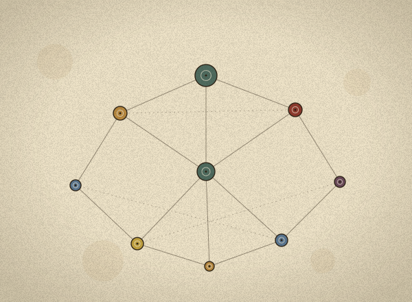

Active · founding programme
Embodied Intelligence
Our founding programme. It studies how cognition and computation extend beyond the individual mind and the single machine. They are spread across people, artefacts, software agents and environments. The programme asks how knowledge is encoded in data, models and running systems, and how that understanding can inform computational systems modelled on collective cognition. It treats computation as a way of finding things out, not only as calculation. We build agents, models and simulations, observe how they act and what they come to “know”, and note where formal, representational accounts of machine intelligence reach their limits.
